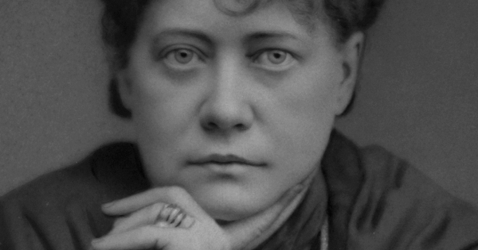

HPB brought many spiritualist ideas to the west, helping to exchange knowledge between the two areas.
- 1831 - Helena Petrovna von Hahn, affectionately known as Madam HPB, is born prematurely at Ekaterinoslav in Southern Russia.
- 1849 - Desiring independence, HPB marries Nikifor Vassilyevich Blavatsky, who is about 40 years old, in July, 1849. In October, she leaves for Tiflis to rejoin family.
- 1849 - 1875 - HPB travels the world in search of wisdom about the nature of life and the reason for human existence.
- 1873 - HPB arrives in America, landing in New York on July 7th.
- 1874 - Using the psychic powers she'd previously developed, she begins working with Henry S. Olcott, the first well-known American of European ancestry to make a formal conversion to Buddhism, to investigate spiritual phenomena at Eddy Farmhouse.
- 1875 - After having issues with her leg, doctors suggest that it be amputated. She refuses. One night the leg turns black, becomes swollen, and with HPB unresponsive, her attendants leave her for dead. After two days of placing cold poultices on the leg, in addition to a white dog sleeping on it each night, HPB's leg and health return to normal.
- 1875 - HPB receives orders to create the Theosophical Society, the society becoming official on November 17th.
- 1878 - Madam HP Blavatsky becomes an American citizen.
- 1891 - May 8th, 1891 HPB succumbs to a case of influenza and passes away.
To learn more about the life and legacy of the eccentric woman known as HPB, click here to find more information.